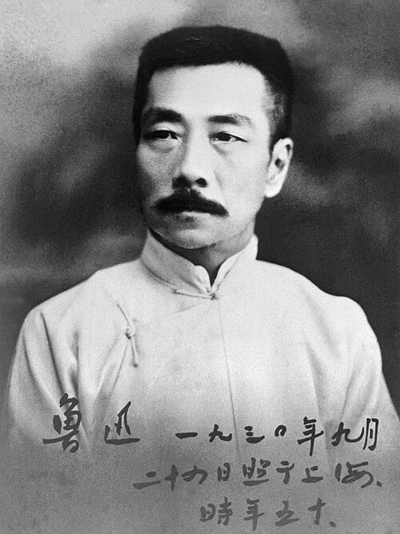

Liang Qichao 梁啟超
Liang Qichao 梁啟超 Qiu Jin 秋瑾
Qiu Jin 秋瑾
Lu Xun 魯迅A paragraph becomes a record
bornWhy put our notes into a structure?
Count
How many of the people in our collection came from Guangdong?
Sort and filter
Show everyone born before 1875, from the oldest to the youngest.
Link
Connect people to the books they wrote and the places they lived in.
Share and check
Another historian can open the same file, repeat the count and find our mistakes.
CSV: comma-separated values
people.csvid,name,pinyin,born,died,native_place 1,嚴復,Yan Fu,1854,1921,福建侯官 2,孫中山,Sun Yat-sen,1866,1925,廣東香山 3,梁啟超,Liang Qichao,1873,1929,廣東新會 4,秋瑾,Qiu Jin,1875,1907,浙江紹興 5,魯迅,Lu Xun,1881,1936,浙江紹興
TSV: tab-separated values
people.tsvid⇥name⇥pinyin⇥born⇥died⇥native_place 1⇥嚴復⇥Yan Fu⇥1854⇥1921⇥福建侯官 2⇥孫中山⇥Sun Yat-sen⇥1866⇥1925⇥廣東香山 3⇥梁啟超⇥Liang Qichao⇥1873⇥1929⇥廣東新會 4⇥秋瑾⇥Qiu Jin⇥1875⇥1907⇥浙江紹興 5⇥魯迅⇥Lu Xun⇥1881⇥1936⇥浙江紹興
Both files open as the same table
| id | name | pinyin | born | died | native_place |
|---|---|---|---|---|---|
| 1 | 嚴復 | Yan Fu | 1854 | 1921 | 福建侯官 |
| 2 | 孫中山 | Sun Yat-sen | 1866 | 1925 | 廣東香山 |
| 3 | 梁啟超 | Liang Qichao | 1873 | 1929 | 廣東新會 |
| 4 | 秋瑾 | Qiu Jin | 1875 | 1907 | 浙江紹興 |
| 5 | 魯迅 | Lu Xun | 1881 | 1936 | 浙江紹興 |
One person, many works: where a table struggles
| name | born | work |
|---|---|---|
| 梁啟超 | 1873 | 少年中國說 |
| 梁啟超 | 1873 | 新民說 |
| 魯迅 | 1881 | 狂人日記 |
| 魯迅 | 1881 | 阿Q正傳 |
Correct a birth year in one row and forget the other, and the file contradicts itself.
| name | born | works |
|---|---|---|
| 梁啟超 | 1873 | 少年中國說；新民說 |
| 魯迅 | 1881 | 狂人日記；阿Q正傳 |
The cell is now text that we have to split again before we can count or sort the works.
JSON: records as objects
[
{
"name": "梁啟超",
"pinyin": "Liang Qichao",
"born": 1873,
"died": 1929,
"native_place": "廣東新會"
},
{
"name": "秋瑾",
"pinyin": "Qiu Jin",
"born": 1875,
"died": 1907,
"native_place": "浙江紹興"
}
]
The same kind of list, written compactly
people.json[
{"name": "嚴復", "born": 1854, "died": 1921, "native_place": "福建侯官"},
{"name": "孫中山", "born": 1866, "died": 1925, "native_place": "廣東香山"},
{"name": "梁啟超", "born": 1873, "died": 1929, "native_place": "廣東新會"},
{"name": "秋瑾", "born": 1875, "died": 1907, "native_place": "浙江紹興"},
{"name": "魯迅", "born": 1881, "died": 1936, "native_place": "浙江紹興"}
]
people.csv, so a flat list like this converts to CSV and back without loss.JSON: records inside records
{
"name": "梁啟超",
"pinyin": "Liang Qichao",
"other_names": {"zi": "卓如", "hao": "任公"},
"born": 1873,
"died": 1929,
"works": [
{"title": "少年中國說", "year": 1900},
{"title": "新民說", "year": 1902},
{"title": "飲冰室合集", "year": null}
]
}
Reading a JSON file in Python
import json
with open("liang.json", encoding="utf-8") as f:
person = json.load(f)
print(person["name"], person["born"], "to", person["died"])
print("字:", person["other_names"]["zi"])
for work in person["works"]:
print(work["year"], work["title"])梁啟超 1873 to 1929 字: 卓如 1900 少年中國說 1902 新民說 None 飲冰室合集
liang.json from the previous slide into Python dictionaries and lists. We reach a value by its key, such as ["works"], and go through a list with for.CSV/TSV or JSON?
| CSV / TSV | JSON | |
|---|---|---|
| Shape | flat rows and columns | nested objects and lists |
| One person, many works | repeated rows, or a second file | a list inside the record |
| Open in Excel | directly | after conversion |
| Typical uses | spreadsheets, statistics, network edge lists | web APIs, language models, IMMARKUS annotation exports |
A database: tables linked by identifiers
| id | name | born | native_place |
|---|---|---|---|
| 1 | 嚴復 | 1854 | 福建侯官 |
| 2 | 孫中山 | 1866 | 廣東香山 |
| 3 | 梁啟超 | 1873 | 廣東新會 |
| 4 | 秋瑾 | 1875 | 浙江紹興 |
| 5 | 魯迅 | 1881 | 浙江紹興 |
| id | person_id | title | year |
|---|---|---|---|
| 1 | 1 | 天演論 | 1898 |
| 2 | 3 | 少年中國說 | 1900 |
| 3 | 3 | 新民說 | 1902 |
| 4 | 4 | 中國女報 | 1907 |
| 5 | 5 | 狂人日記 | 1918 |
| 6 | 5 | 阿Q正傳 | 1921 |
| 7 | 2 | 三民主義 | 1924 |
person_id points to a row in people. One person can have many works, which is called a one-to-many relationship.The schema: tables, columns, types
CREATE TABLE people ( id INTEGER PRIMARY KEY, name TEXT, pinyin TEXT, born INTEGER, died INTEGER, native_place TEXT ); CREATE TABLE works ( id INTEGER PRIMARY KEY, person_id INTEGER REFERENCES people(id), title TEXT, year INTEGER );
person_id must be the id of someone in people.SQL: who was born before 1875?
SELECT name, born FROM people WHERE born < 1875 ORDER BY born;
| name | born |
|---|---|
| 嚴復 | 1854 |
| 孫中山 | 1866 |
| 梁啟超 | 1873 |
SQL: who wrote what? (JOIN)
SELECT people.name, works.title, works.year FROM works JOIN people ON works.person_id = people.id ORDER BY works.year;
| name | title | year |
|---|---|---|
| 嚴復 | 天演論 | 1898 |
| 梁啟超 | 少年中國說 | 1900 |
| 梁啟超 | 新民說 | 1902 |
| 秋瑾 | 中國女報 | 1907 |
| 魯迅 | 狂人日記 | 1918 |
| 魯迅 | 阿Q正傳 | 1921 |
| 孫中山 | 三民主義 | 1924 |
works, the database finds the row in people whose id equals that work’s person_id (this is the condition after ON) and attaches the person’s name to it. The prefixes people. and works. say which table each column comes from.SQL: how many people per native place?
SELECT native_place, COUNT(*) AS n FROM people GROUP BY native_place ORDER BY n DESC, native_place;
| native_place | n |
|---|---|
| 浙江紹興 | 2 |
| 廣東新會 | 1 |
| 廣東香山 | 1 |
| 福建侯官 | 1 |
Why a database is more than a spreadsheet
Stored once
Each fact lives in one row. Correct Liang Qichao’s birth year there, and every query sees the correction.
Linked by ids
People, works, places and sources sit in separate tables and are joined only when a question needs them.
Questions as text
A query is a line of text that we can save, run again on new data, and quote in the methods section of a paper.
Last week’s HistFig: where is everything stored?
Inside histfig.db: six tables linked by ids
figures
id
name
birth_year
death_year
persona
documents
id
figure_id
filename
status
chunks
id
document_id
text
tokens
embedding
conversations
id
figure_id
title
messages
id
conversation_id
role
content
sources
prompts, keeps the system prompts.One passage is one row of chunks
["少年", "智", "國", "少年_智", …]JSON list for keyword search2,560 numbers stored as bytesthe vector for meaning searchmessages, with the passages it used stored as JSON in the column sources. (Illustrative values.)From a paragraph to JSON with a language model
Instructions
Extract the person. Use only facts stated in the text, and write null when the text is silent.
Schema
The fields we want and their types.
One example
A paragraph about Liang Qichao with its finished JSON.
Model
through the API, with the new paragraph about Qiu Jin
JSON record
ready to be saved, converted to CSV, or inserted into the database
What is an API call?
Address
where the request goes: …/chat/completions
Key
who is asking (and paying): your API key
Body
what we ask for, written in JSON: model, messages, schema
We have done this before: OCR in Week 6
The schema: what the record must look like
{
"name": "string",
"birth_year": "integer or null",
"death_year": "integer or null",
"events": [
{"year": "integer or null",
"place": "string or null",
"event": "string"}
]
}
type, properties, required); see schema.json in the notes.One-shot: show the model one solved example
{"name": "梁啟超", "birth_year": 1873, "death_year": 1929,
"events": [
{"year": 1873, "place": "廣東新會", "event": "出生"},
{"year": 1898, "place": "日本", "event": "戊戌變法失敗後流亡日本"},
{"year": 1902, "place": "日本", "event": "創辦《新民叢報》"},
{"year": 1929, "place": "北京", "event": "逝世"}]}
New data: the paragraph we want the model to analyze
The structure of the prompt: a short conversation
{"name": "梁啟超", "birth_year": 1873, …} written by us, as if the model had answeredresponse_formatThe API call in Python (1): the openai library
import json, os
from openai import OpenAI
client = OpenAI(base_url="https://openrouter.ai/api/v1",
api_key=os.environ["OPENAI_API_KEY"])
response = client.chat.completions.create(
model="qwen/qwen3.5-9b",
messages=[
{"role": "system", "content": INSTRUCTIONS},
{"role": "user", "content": EXAMPLE_TEXT},
{"role": "assistant", "content": EXAMPLE_JSON},
{"role": "user", "content": paragraph},
],
response_format={"type": "json_schema", "json_schema":
{"name": "person", "strict": True, "schema": SCHEMA}},
extra_body={"reasoning": {"enabled": False}},
)
record = json.loads(response.choices[0].message.content)
The API call in Python (2): plain HTTP with requests
import json, os, requests
payload = {
"model": "qwen/qwen3.5-9b",
"messages": [
{"role": "system", "content": INSTRUCTIONS},
{"role": "user", "content": EXAMPLE_TEXT},
{"role": "assistant", "content": EXAMPLE_JSON},
{"role": "user", "content": paragraph},
],
"response_format": {"type": "json_schema", "json_schema":
{"name": "person", "strict": True, "schema": SCHEMA}},
"reasoning": {"enabled": False},
}
response = requests.post(
"https://openrouter.ai/api/v1/chat/completions",
headers={"Authorization": "Bearer " + os.environ["OPENAI_API_KEY"]},
json=payload, timeout=120)
reply = response.json()
record = json.loads(reply["choices"][0]["message"]["content"])
A good answer for Qiu Jin
{"name": "秋瑾", "birth_year": 1875, "death_year": 1907,
"events": [
{"year": 1875, "place": null, "event": "出生"},
{"year": 1904, "place": "日本", "event": "東渡日本留學"},
{"year": 1905, "place": "日本", "event": "加入同盟會"},
{"year": 1907, "place": "上海", "event": "創辦《中國女報》"},
{"year": 1907, "place": "紹興", "event": "被捕就義"}]}
Exercise, part 1: set up
week11 and open it in VS Code: File → Open Folder…export OPENAI_API_KEY="your-key"
On Windows (PowerShell): $env:OPENAI_API_KEY="your-key"
Exercise, part 2: run
paragraph.txt in the week11 folder.extract.py.pip install openai
python extract.py # prints the JSON and saves record.json
OPENAI_API_KEY means step 3 was skipped or done in another terminal.The prompt for your coding assistant
Write a Python script called extract.py. It reads a short Chinese paragraph about a historical person from paragraph.txt, asks a language model to turn it into a JSON record, prints the record, and saves it as record.json.
How to call the model:
- Use the openai Python library (install it with pip install openai if needed).
- Connect to OpenRouter: base_url "https://openrouter.ai/api/v1", with the API key from the environment variable OPENAI_API_KEY. Never write the key into the code.
- Model: qwen/qwen3.5-9b. Turn reasoning off with extra_body={"reasoning": {"enabled": False}}.
What the record should contain:
- name, birth_year, death_year, and events (a list in which each event has year, place and event).
- null when the paragraph does not say something. The values stay in Chinese.
- Send this structure to the model as a JSON schema (response_format with type "json_schema"), and also save the schema as schema.json.
What to tell the model:
- Instructions: "Extract information about the person. Use only facts stated in the paragraph. Write null when the paragraph does not say."
- Before the real paragraph, show it one solved example (one-shot): the example paragraph below as a user message, and the example JSON below as an assistant message.
Print the JSON nicely indented, with the Chinese characters readable (not as \u codes).
+ the example paragraph and its JSON. Copy the full prompt from the notes page.
Check the record, then change one thing
errors.csv whether it is correct, wrong, or invented.